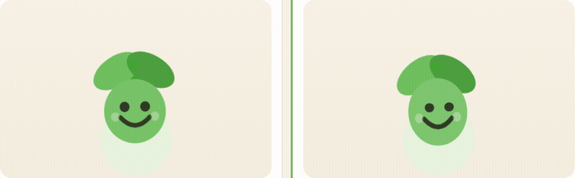

Pip idle
New is the idle on Today and the current path node. Old is the previous loop, same art, played here on purpose. Both run even when the Mac has Reduce Motion turned on. The Sprout app does not — it still honors that setting and Calm motion.
Old
Previous loop
About ±2° of tilt and a 4% breath. Easy to read as a still image, especially at 58px.
New
Layered idle
Feet sway, a taller breath, leaves on their own clocks, a blink, a glance, and a soft highlight.
Still frames of the new idle
These are paused on purpose, so a screenshot still shows three different drawings.
Checking that the live drawing is changing…
